Eino 编排：Graph 与 Workflow
Key differences :
虽然都是 使用 compose 实现编排 agent 但是在层次上面体现的不同 :
在之前的 ADK 的开发框架中的那些编排手段 : SequentialAgent、ParallelAgent、LoopAgent 这些都是基于底层的 API编排实现,简化了多Agent的协作开发
但是现在要学习的是底层的编排 API, 提供灵活的组件组合能力
Graph 图标编排
之前简单的工具 Tool 的链式调用的局限性 :
单一责任：每个工具只做一件事
无并行性：多个独立任务不能同时执行
难以重复使用：复杂逻辑难以拆分和组合
Eino的软件包提供了非常通用的确定性编排能力
你可以利用'Graph/Chain/Workflow，将任何需要“确定性业务流”的系统组织成可执行的管道。
它能够原生编排所有 Eino 组件（ChatModel、Prompt、Tools、Retriever、Embedding、Indexer 等），并支持完整的回调系统和中断/恢复+检查点支持。
Graph Tool 的作用 :
- Graph Tool 是一种工具包裹的 compose 工作流程：将可编译的编排工件包裹到可由 Agent 调用的工具中compose.Graph / compose.Chain / compose.Workflow
- 支持并行/分支/复合：由 compose 提供（并行、分支、场映射、子图等）;Graph Tool 只是把它们作为工具入口点暴露出来
- 支持状态管理和持久化：在节点间传递数据，并通过检查点保存/恢复运行中的状态
- 支持中断/恢复：既有工作流内部中断（节点内触发）也支持工具级中断包裹（嵌套中断场景）
Workflow
workflow 是Eino 创建工作流程中的 核心组件 :
wf := compose.NewWorkflow[Input, Output]()
// Add nodes
wf.AddLambdaNode("load", loadFunc).AddInput(compose.START)
wf.AddLambdaNode("chunk", chunkFunc).AddInput("load")
wf.AddLambdaNode("score", scoreFunc).AddInput("chunk")
wf.AddLambdaNode("answer", answerFunc).AddInput("score")
// Connect to end node
wf.End().AddInput("answer")
node：工作流程中的处理单元
Edge：节点间的数据流方向
START：工作流程的入口点
END：工作流程的出口点
BatchNode :
func agentTask(ctx context.Context, task AgentTask) (AgentResult, error) {
// 调用Agent处理单个任务
agent := adk.NewChatModelAgent(ctx, &adk.ChatModelAgentConfig{
Name: task.AgentName,
Instruction: task.Instruction,
})
runner := adk.NewRunner(ctx, adk_runner.RunnerConfig{Agent: agent})
iter := runner.Query(ctx, task.Input)
// 处理结果...
return result, nil
}
// 创建BatchNode并行执行多个Agent
scorer := batch.NewBatchNode(&batch.NodeConfig[AgentTask, AgentResult]{
Name: "AgentBatch",
InnerTask: agentTask,
MaxConcurrency: 3,
})
result , err := score.Invoke() ;
FieldMapping
主要用来实现 跨越节点 实现信息的传递 ;
wf.AddLambdaNode("answer", answerFunc).
AddInputWithOptions("filter", // Get data from filter node
[]*compose.FieldMapping{compose.ToField("TopK")},
compose.WithNoDirectDependency()).
AddInputWithOptions(compose.START, // Get data from START node
[]*compose.FieldMapping{compose.MapFields("Question", "Question")},
compose.WithNoDirectDependency())
主要实现的作用 :
- 在非相邻节点之间传递数据
- 将多个数据源合并到单一节点
- 重命名数据字段
Graph Tool Implementation(实现)
1.Define Input/Output Structures
type Input struct {
FilePath string `json:"file_path" jsonschema:"description=Absolute path to the uploaded document file"`
Question string `json:"question" jsonschema:"description=The question to answer from the document"`
}
type Output struct {
Answer string `json:"answer"`
Sources []string `json:"sources"`
}
2.Build the Workflow
func buildWorkflow(cm model.BaseChatModel) *compose.Workflow[Input, Output] {
wf := compose.NewWorkflow[Input, Output]()
// load: read file
wf.AddLambdaNode("load", compose.InvokableLambda(
func(ctx context.Context, in Input) ([]*schema.Document, error) {
data, err := os.ReadFile(in.FilePath)
if err != nil {
return nil, err
}
return []*schema.Document{{Content: string(data)}}, nil
},
)).AddInput(compose.START)
// chunk(数据处理/组块): split into chunks
wf.AddLambdaNode("chunk", compose.InvokableLambda(
func(ctx context.Context, docs []*schema.Document) ([]*schema.Document, error) {
var out []*schema.Document
for _, d := range docs {
out = append(out, splitIntoChunks(d.Content, 800)...)
}
return out, nil
},
)).AddInput("load")
// score(并行打分): parallel scoring
scorer := batch.NewBatchNode(&batch.NodeConfig[scoreTask, scoredChunk]{
Name: "ChunkScorer",
InnerTask: newScoreWorkflow(cm),
MaxConcurrency: 5,
})
wf.AddLambdaNode("score", compose.InvokableLambda(
func(ctx context.Context, in scoreIn) ([]scoredChunk, error) {
tasks := make([]scoreTask, len(in.Chunks))
for i, c := range in.Chunks {
tasks[i] = scoreTask{Text: c.Content, Question: in.Question}
}
return scorer.Invoke(ctx, tasks)
},
)).
AddInputWithOptions("chunk", []*compose.FieldMapping{compose.ToField("Chunks")}, compose.WithNoDirectDependency()).
AddInputWithOptions(compose.START, []*compose.FieldMapping{compose.MapFields("Question", "Question")}, compose.WithNoDirectDependency())
// filter: sort descending by score, keep up to top-3 chunks with score ≥ 3.(按照分数实现降序排列,然后获取前三个块)
wf.AddLambdaNode("filter", compose.InvokableLambda(
func(ctx context.Context, scored []scoredChunk) ([]scoredChunk, error) {
sort.Slice(scored, func(i, j int) bool {
return scored[i].Score > scored[j].Score
})
const maxK = 3
var top []scoredChunk
for _, c := range scored {
if c.Score < 3 {
break
}
top = append(top, c)
if len(top) == maxK {
break
}
}
return top, nil
},
)).AddInput("score")
// answer(从前k个回答中合成一个回答,若为空则返回空消息): synthesize a response from top-k chunks, or return a not-found message if empty.
wf.AddLambdaNode("answer", compose.InvokableLambda(
func(ctx context.Context, in synthIn) (Output, error) {
if len(in.TopK) == 0 {
return Output{
Answer: fmt.Sprintf("No relevant content found in the document for: %q", in.Question),
}, nil
}
return synthesize(ctx, cm, in)
},
)).
AddInputWithOptions("filter", []*compose.FieldMapping{compose.ToField("TopK")}, compose.WithNoDirectDependency()).
AddInputWithOptions(compose.START, []*compose.FieldMapping{compose.MapFields("Question", "Question")}, compose.WithNoDirectDependency())
wf.End().AddInput("answer")
return wf
}
3.Wrap as a Tool (封装工具流)
func BuildTool[M adk.MessageType](ctx context.Context, cm model.BaseModel[M]) (tool.BaseTool, error) {
// Build workflow
wf := compose.NewWorkflow[Input, Output]()
// Add nodes
wf.AddLambdaNode("load", loadFunc).AddInput(compose.START)
wf.AddLambdaNode("chunk", chunkFunc).AddInput("load")
wf.AddLambdaNode("score", scoreFunc).
AddInputWithOptions("chunk", []*compose.FieldMapping{compose.ToField("Chunks")}, compose.WithNoDirectDependency()).
AddInputWithOptions(compose.START, []*compose.FieldMapping{compose.MapFields("Question", "Question")}, compose.WithNoDirectDependency())
// Wrap as Tool
return graphtool.NewInvokableGraphTool[Input, Output](wf, "answer_from_document", "...")
}
Graph Tool Execution Flow
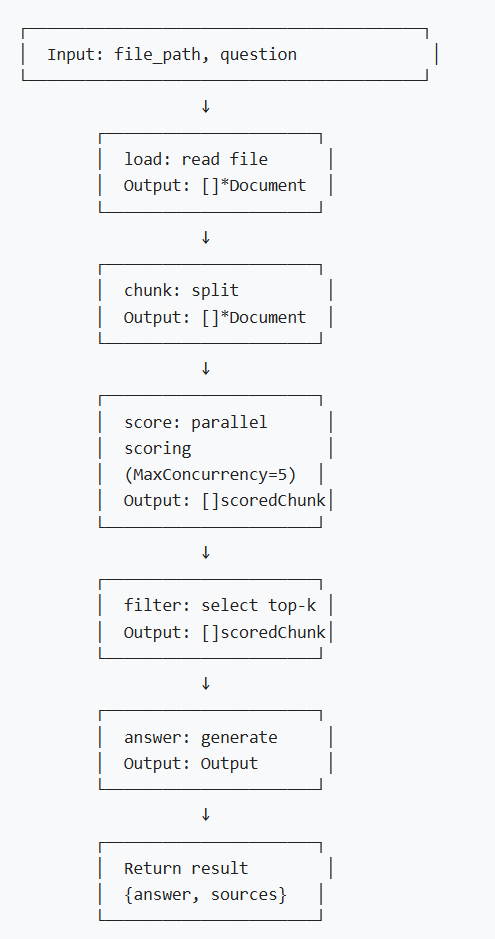
Compose 设计原则
实现一个 设计假设 : 上一个运行节点的输出 可以 作为下一个节点的输入值 实现传输 ;
在 Golang 中，有两种基本方法来实现这一假设：
1. 将不同节点的输入和输出转换为更通用的类型，如 、 等。anymap[string]any
1.1 将这种推广推广应用于任何方法，但相应的成本是：开发者在编写代码时需要明确转换为特定类型。这会大大增加开发者的认知负担，因此这一方法最终被放弃。
1.2 Langchain的方法可以看作是通过穿越，每个逻辑节点根据其需求使用相应的密钥取对应的值。在langchaingo实现中，它遵循这种方法，但同样，Golang中的任何一个仍然需要使用。这种方法对开发者来说仍然存在较大的认知负担。map[string]anytype assertion
2. 保持每个节点的输入和输出类型符合开发者的预期，并确保编译阶段的上游和下游类型保持一致。
进路2是Eino最终选择的进路。这种方法在配器过程中最容易理解。整个过程类似于，每个区块的突出和凹陷部件都有自己的规格，只有规格一致时，才能形成上下游关系。building blocks
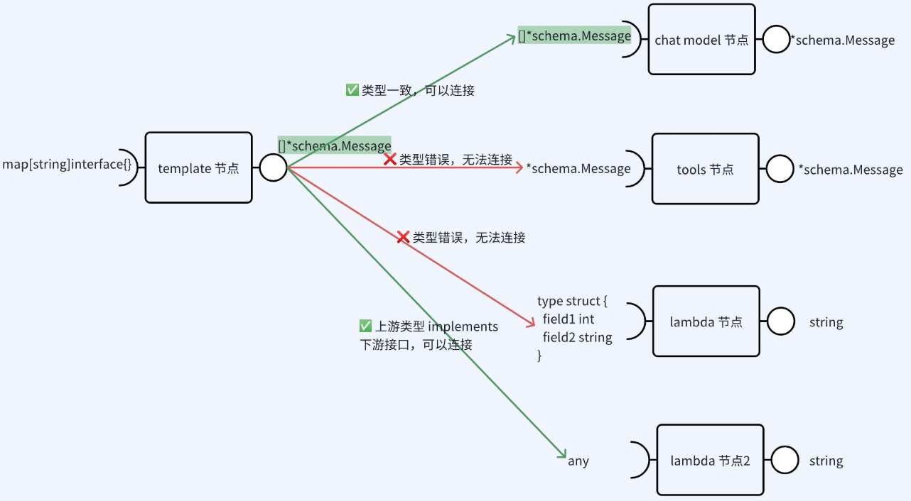
Edge 边
图中黄色部分是Eino提供的另一种类型转换机制：如果下游接受类型，但上游输出类型不是map[string]any，你可以用它将上游输出类型转换为map[string]any，map键为选项中指定的OutputKey。当多条边汇聚到一个节点时，这种机制非常方便。map[string]any``graph.AddXXXNode(node_key, xxx, compose.WithOutputKey("outkey")
同样，如果上游是 ，但下游输入类型不是 map[string]any，你可以用它从上游输出中获取一个键的值作为下游输入。map[string]any``graph.AddXXXNode(node_key, xxx, compose.WithInputKey("inkey")
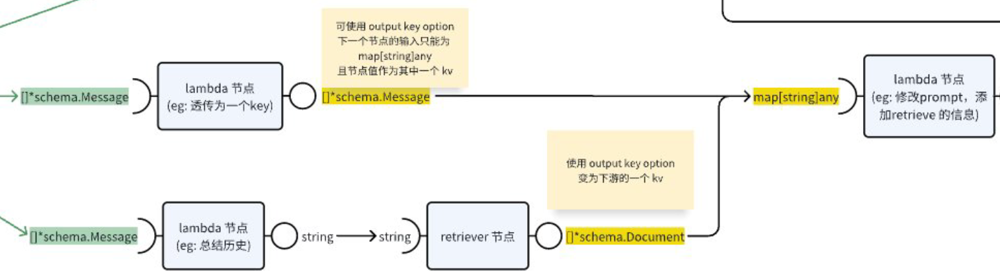
Branch
一个节点的后面有多个边, 每个边的下游分支都只会运行一次 ;
使用 分支 的设计机制 : 一个节点 后面有 n 个节点 , 但是只有 条件返回 的节点键对应的节点会运行,所有沿同一分支的节点必须 具有类型 对齐 ;
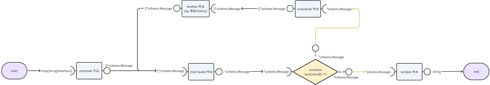
Chain
func TestChain() {
chain := compose.NewChain[map[string]interface,string]()
// 输入的内容 可以设计 为 map[string]any{}
nodeTemplate := &fakeChatTemplate{} // input: map[string]any, output: []*schema.Message
nodeHistoryLambda := &fakeLambda{} // input: []*schema.Message, output: []*schema.Message
nodeChatModel := &fakeChatModel{} // input: []*schema.Message, output: *schema.Message
// 输出的内容要设计为 String()
nodeConvertResLambda := &fakeLambda{} // input: *schema.Message, output: string
chain.
AppendChatTemplate(nodeTemplate).
AppendLambda(nodeHistoryLambda).
AppendChatModel(nodeChatModel).
AppendLambda(nodeConvertResLambda)
}
graph 编排的逻辑 :

Parallel
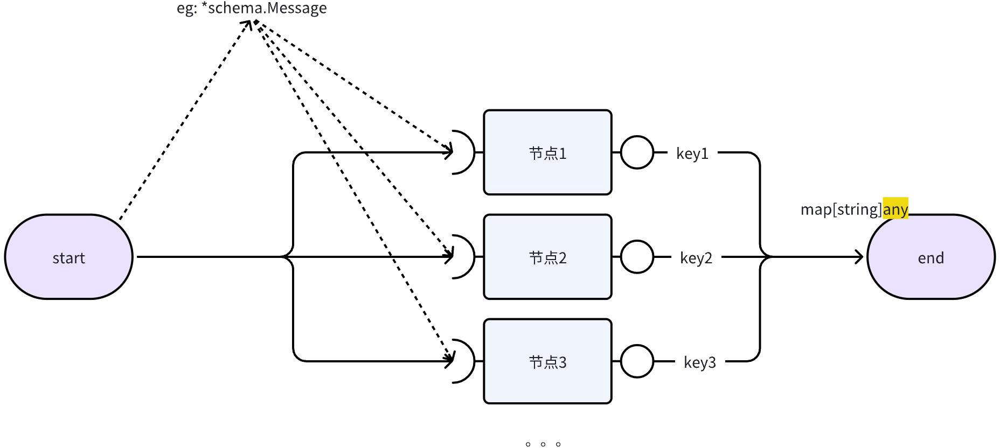
func TestParallel() {
chain := compose.NewChain[map[string]any, map[string]*schema.Message]()
parallel := compose.NewParallel()
model01 := &fakeChatModel{} // input: []*schema.Message, output: *schema.Message
model02 := &fakeChatModel{} // input: []*schema.Message, output: *schema.Message
model03 := &fakeChatModel{} // input: []*schema.Message, output: *schema.Message
parallel.
AddChatModel("outkey_01", model01).
AddChatModel("outkey_02", model02).
AddChatModel("outkey_03", model03)
lambdaNode := &fakeLambdaNode{} // input: map[string]any, output: map[string]*schema.Message
chain.
AppendParallel(parallel).
AppendLambda(lambdaNode)
}
State
主要在 Graph 编排方式中出现 :
Graph中的State
创建带状态的Graph：
graph := compose.NewGraphWithState[Input, Output, *AgentState](
func(ctx context.Context) *AgentState {
return &AgentState{ToolCallCount: 0}
},
)
添加状态处理器：
graph.AddLambdaNode("node1", fn,
compose.WithStatePreHandler(func(ctx context.Context, state *AgentState, input Input) (Input, error) {
state.ToolCallCount++ // 修改状态
return input, nil
}),
compose.WithStatePostHandler(func(ctx context.Context, state *AgentState, output Output) (Output, error) {
state.History = append(state.History, output) // 修改状态
return output, nil
}),
)
Overview
State 是Eino框架中用于 在Graph执行过程中维护和共享状态 的机制;
- 多个节点读写同一个状态
- 节点执行前后实现修改状态(PreHandler/PostHandler)
- 支持并发安全的状态访问
Effect
1.节点间共享数据:多个节点可以实现访问和修改同一状态
2.执行流程控制:可以实现根据状态实现是否继续循环,跳转分支等
3.上下文维护:记录对话历史,工具调用次数等运行时信息
4.并发安全:支持多节点并发读写状态
Difference
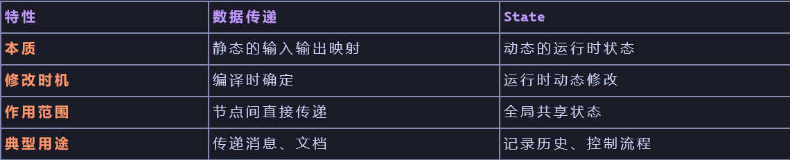
Use & Analysis
1.创建带状态的 Graph : NewGraphWithState
2.添加状态处理器 :
- WithStatePreHandler : 节点执行前修改状态
- WithStatePostHandler : 节点执行后修改状态
3.节点内部读写状态 : 通过调用 ProcessState 函数
Demo
// AgentState 定义状态结构
type AgentState struct {
// 工具调用计数
ToolCallCount int
// 对话历史
History []string
// 当前步骤
CurrentStep string
// 是否需要继续循环
NeedContinue bool
// 读写锁，支持并发安全
mu sync.RWMutex
}
// NewAgentState 创建新的状态实例
func NewAgentState() *AgentState {
return &AgentState{
ToolCallCount: 0,
History: make([]string, 0),
CurrentStep: "start",
NeedContinue: true,
}
}
// AddHistory 添加历史记录（并发安全）
func (s *AgentState) AddHistory(message string) {
s.mu.Lock()
defer s.mu.Unlock()
s.History = append(s.History, message)
}
// IncrementToolCall 增加工具调用次数（并发安全）
func (s *AgentState) IncrementToolCall() {
s.mu.Lock()
defer s.mu.Unlock()
s.ToolCallCount++
}
// SetCurrentStep 设置当前步骤（并发安全）
func (s *AgentState) SetCurrentStep(step string) {
s.mu.Lock()
defer s.mu.Unlock()
s.CurrentStep = step
}
// SetNeedContinue 设置是否需要继续（并发安全）
func (s *AgentState) SetNeedContinue(need bool) {
s.mu.Lock()
defer s.mu.Unlock()
s.NeedContinue = need
}
// GetToolCallCount 获取工具调用次数（并发安全）
func (s *AgentState) GetToolCallCount() int {
s.mu.RLock()
defer s.mu.RUnlock()
return s.ToolCallCount
}
// GetHistory 获取历史记录（并发安全）
func (s *AgentState) GetHistory() []string {
s.mu.RLock()
defer s.mu.RUnlock()
// 返回副本，避免并发问题
history := make([]string, len(s.History))
copy(history, s.History)
return history
}
// 模拟节点处理函数
func analyzeNode(state *AgentState, input string) string {
// PreHandler：在节点执行前修改状态
state.SetCurrentStep("analyze")
state.AddHistory(fmt.Sprintf("用户输入: %s", input))
fmt.Printf("[PreHandler] 步骤: %s, 历史消息数: %d\n", state.CurrentStep, len(state.GetHistory()))
// 执行节点逻辑
output := fmt.Sprintf("分析完成：用户想了解 %s", input)
// PostHandler：在节点执行后修改状态
state.AddHistory(fmt.Sprintf("助手回复: %s", output))
fmt.Printf("[PostHandler] 添加助手回复到历史, 历史消息数: %d\n", len(state.GetHistory()))
return output
}
func toolCallNode(state *AgentState, input string) string {
// PreHandler：在工具调用前更新状态
state.IncrementToolCall()
state.SetCurrentStep("tool_call")
fmt.Printf("[PreHandler] 工具调用次数: %d\n", state.GetToolCallCount())
// 执行工具调用（模拟）
output := "工具调用结果：今天天气晴朗，温度25°C"
// PostHandler：记录工具调用结果
state.AddHistory(fmt.Sprintf("工具结果: %s", output))
return output
}
func generateNode(state *AgentState, input string) string {
// PreHandler：在生成前检查是否需要继续
if state.GetToolCallCount() < 2 {
state.SetNeedContinue(true)
fmt.Printf("[PreHandler] 工具调用次数不足，需要继续循环\n")
} else {
state.SetNeedContinue(false)
fmt.Printf("[PreHandler] 工具调用次数足够，准备结束\n")
}
state.SetCurrentStep("generate")
// 执行生成逻辑
output := fmt.Sprintf("最终回答：%s", input)
// PostHandler：记录最终回答
state.AddHistory(fmt.Sprintf("最终回答: %s", output))
return output
}
func main() {
fmt.Println("=== Eino State 组件演示 ===\n")
// 1. 创建状态实例
state := NewAgentState()
// 2. 模拟Graph执行流程
input := "今天天气怎么样"
// 节点1：分析
output1 := analyzeNode(state, input)
fmt.Printf("节点1输出: %s\n\n", output1)
// 节点2：工具调用（模拟多次调用）
output2 := toolCallNode(state, output1)
fmt.Printf("节点2输出: %s\n\n", output2)
// 节点3：生成
output3 := generateNode(state, output2)
fmt.Printf("节点3输出: %s\n\n", output3)
// 3. 查看最终状态
fmt.Println("=== 最终状态 ===")
fmt.Printf("工具调用次数: %d\n", state.GetToolCallCount())
fmt.Printf("当前步骤: %s\n", state.CurrentStep)
fmt.Printf("是否需要继续: %v\n", state.NeedContinue)
fmt.Printf("历史记录:\n")
for i, msg := range state.GetHistory() {
fmt.Printf(" %d: %s\n", i+1, msg)
}
// 4. 并发安全演示
fmt.Println("\n=== 并发安全演示 ===")
var wg sync.WaitGroup
for i := 0; i < 5; i++ {
wg.Add(1)
go func(id int) {
defer wg.Done()
state.IncrementToolCall()
fmt.Printf("协程 %d 增加了工具调用次数, 当前次数: %d\n", id, state.GetToolCallCount())
}(i)
}
wg.Wait()
fmt.Printf("最终工具调用次数: %d\n", state.GetToolCallCount())
}
Eino : Workflow Orchestration Framework
Overview
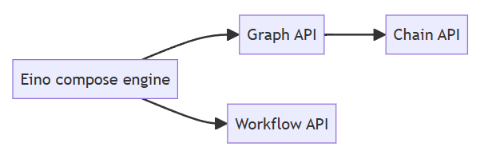
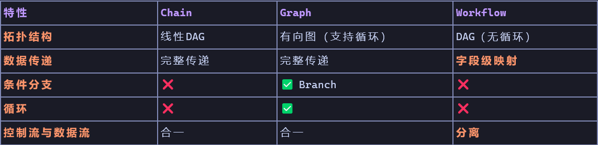
Why use workflow
Flexible Input and Output Types
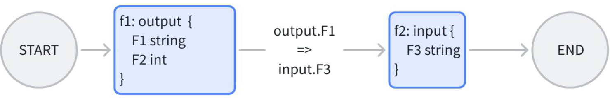
编排的节点中输入输出为特定的结构体,匹配业务场景
使用workflow实现编排的时候 会将F1的输出字段直接映射到 F2的输入字段中的F3.同时会保留原函数的签名 : 单个节点都是 实际业务觉得输入输出, 无需管输入输出的格式 ;
核心价值：
- 解耦：节点间不再依赖完整类型
- 灵活：可从任意前驱节点取任意字段
- 清晰：明确声明需要哪些数据
How to use Workflow
the simplest example
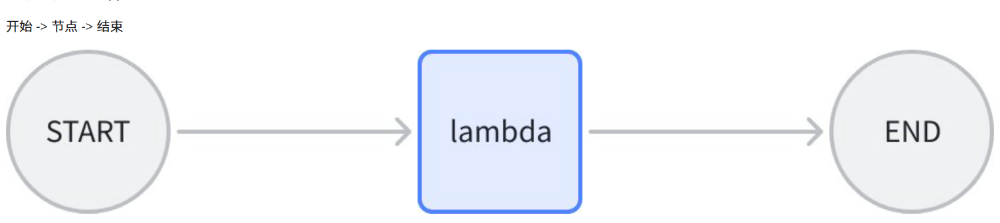
// creates and invokes a simple workflow with only a Lambda node.
// 由于所有字段映射都是“全部到全部”的映射
//（通过使用不带字段映射的 AddInput 实现），
// 这个简单工作流等价于一个图：START -> lambda -> END。
func main() {
// create a Workflow, just like creating a Graph
wf := compose.NewWorkflow[int, string]()
// add a lambda node to the Workflow, just like adding the lambda to a Graph
wf.AddLambdaNode("lambda", compose.InvokableLambda(
func(ctx context.Context, in int) (string, error) {
return strconv.Itoa(in), nil
})).
// 从 START 向该 lambda 节点添加输入。
// this means mapping all output of START to the input of the lambda.
// AddInput 的作用是同时设置控制依赖
// 和数据依赖。
AddInput(compose.START)
// 获取工作流的 compose.END，用于方法链式调用
wf.End().
// add an input to compose.END,
// which means 'using ALL output of lambda node as output of END'.
AddInput("lambda")
// compile the Workflow, just like compiling a Graph
run, err := wf.Compile(context.Background())
if err != nil {
logs.Errorf("workflow compile error: %v", err)
return
}
// invoke the Workflow, just like invoking a Graph
result, err := run.Invoke(context.Background(), 1)
if err != nil {
logs.Errorf("workflow run err: %v", err)
return
}
logs.Infof("%v", result)
}
总结对比一下
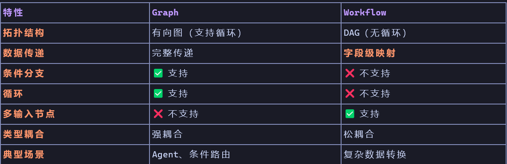
Graph - 完整传递：
graph.AddNode("answer", func(input map[string]any) map[string]any {
// 必须接收完整结构，即使只需要部分字段
question := input["question"].(string)
context := input["context"].(string)
_ = input["extra"] // 不需要，但必须处理
return map[string]any{"answer": "..."}
})
graph.AddEdge("retrieve", "answer") // 传递完整数据
Workflow - 字段映射：
wf.AddNode("answer", func(input map[string]any) map[string]any {
// 只接收需要的字段
question := input["question"].(string)
context := input["context"].(string)
return map[string]any{"answer": "..."} },
FieldMapping{FromField: "question", ToField: "question"}, // 只映射question
FieldMapping{FromField: "context", ToField: "context"}, // 只映射context
)
选择建议
用Graph：
- 需要条件分支（如ReAct Agent）
- 需要循环（如思考-行动-观察）
- 流程动态路由
用Workflow：
- 需要精确字段映射
- 节点需要从多个前驱取数据
- 数据转换为主
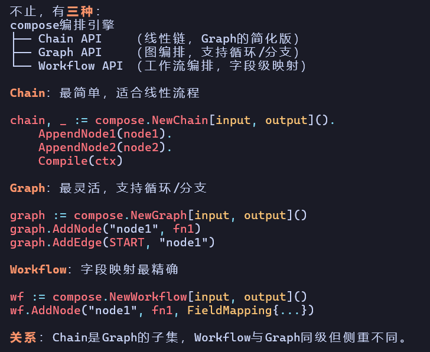